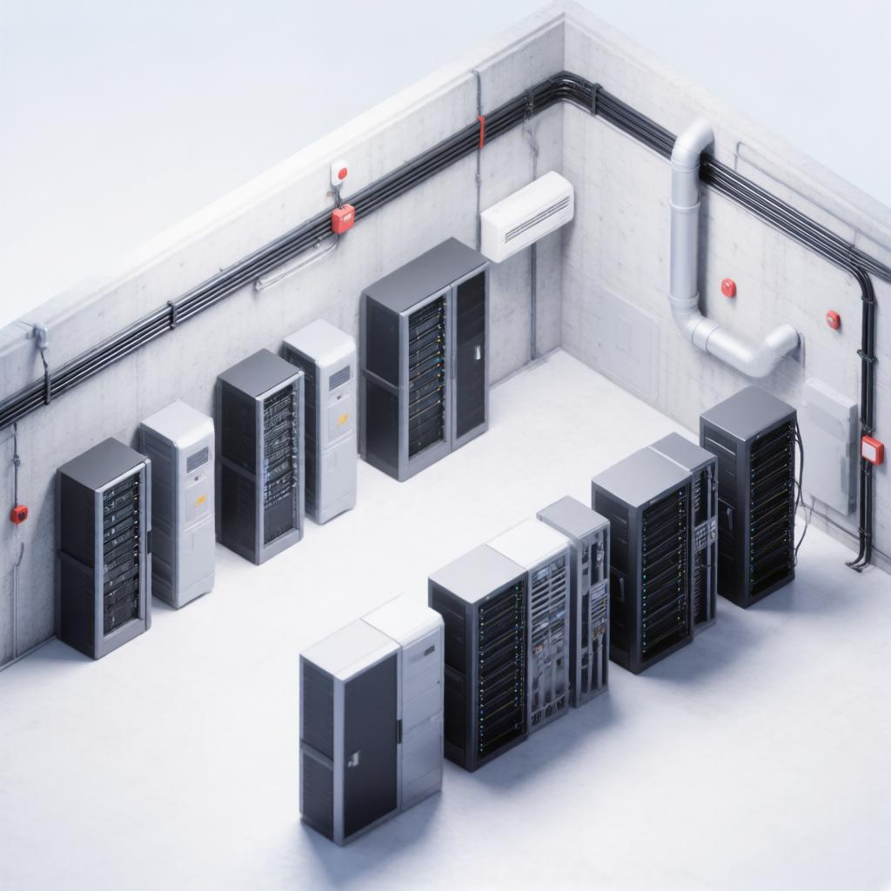

Поддержание строгого температурного режима и надежная защита от пожара критически важны для серверной комнаты, так как работающее сетевое и серверное оборудование выделяет огромное количество тепла. Перегрев может привести к сбоям в системе, повреждению дорогостоящих компонентов и потере важных данных. В свою очередь, датчики пожарной сигнализации позволяют моментально обнаружить возгорание на ранней стадии, предотвратить уничтожение инфраструктуры и обеспечить непрерывность бизнес-процессов компании.